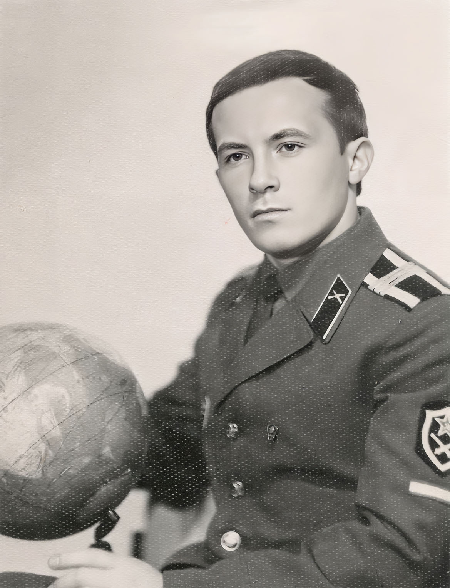
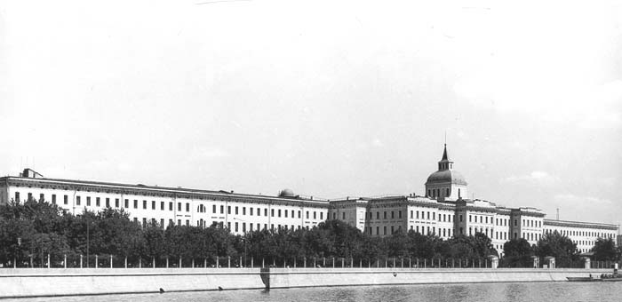
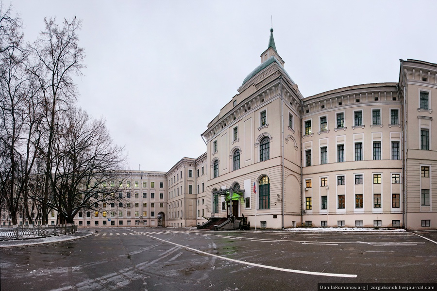
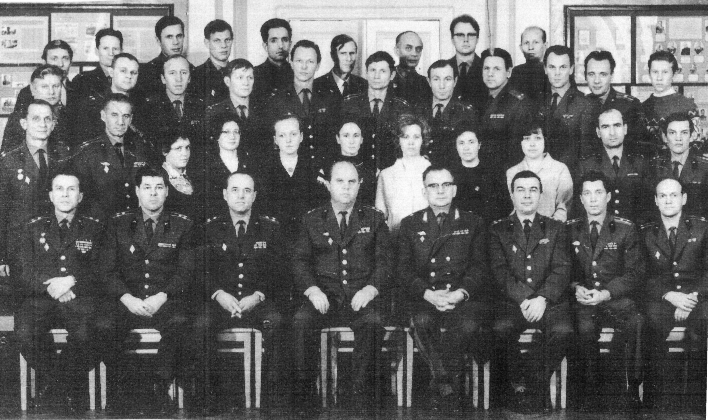
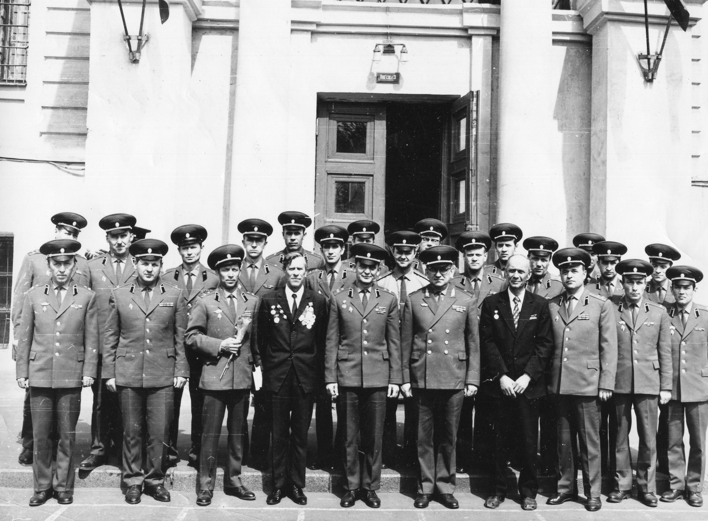
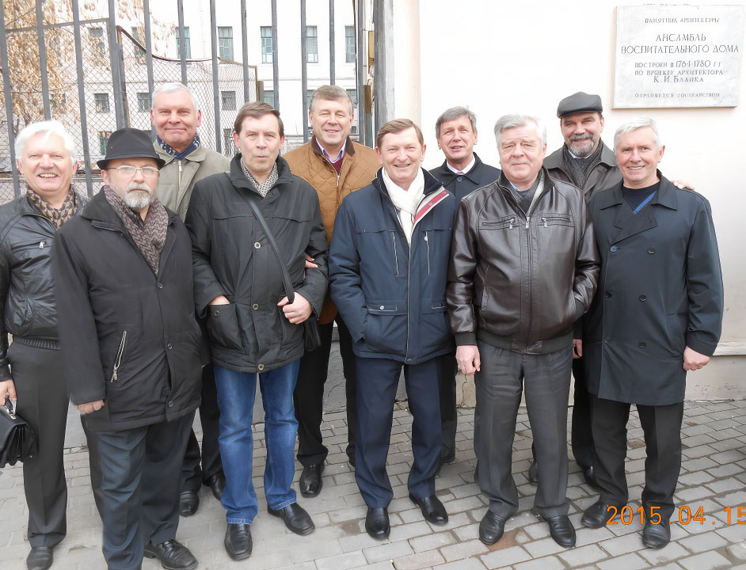
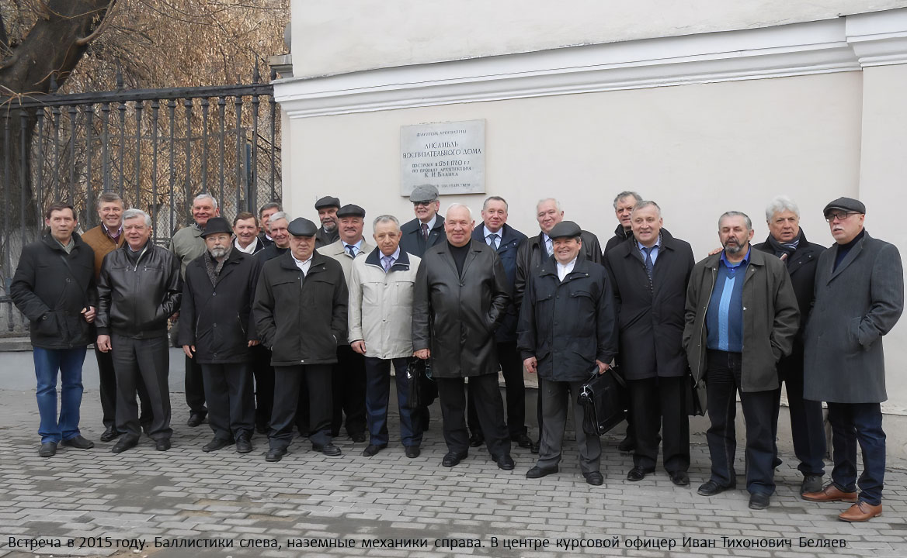

Декабрь 1972 года.
После 2-х лет срочной службы поступил в Военную академию.
Командир строевого отделения курсантов.



Начальник курса подполковник Киселёв Валентин Александрович и другие командиры.

Генерал-майор Д.А. Погорелов и другие преподаватели профильной кафедры.

1972 год. Кафедре баллистик 50 лет.
Личный состав кафедры баллистики и научно-исследовательской лаборатории (НИЛ). 1972 г. — кафедре 50 лет.
1-й ряд, слева направо:
Худяков Сергей Тихонович – старший преподаватель;
Мухин Иван
Иванович –
старший преподаватель;
Жданюк Борис Федорович – старший преподаватель;
Леонов Георгий Павлович –
заместитель начальника кафедры;
Погорелов Дмитрий
Алексеевич – начальник кафедры;
Гудзовский Владимир Алексеевич – старший преподаватель;
Зверев
Владимир Петрович — старший преподаватель;
Иванов Виталий Александрович — начальник НИЛ.
2-й ряд, слева
направо:
Жигаловский Ким Сергеевич – преподаватель;
Волин Виталий Михайлович –
преподаватель;
Ольга – лаборант учебной лаборатории;
Пушкова Ирина Николаевна – инженер
НИЛ;
Киселева Гуля – лаборант учебной лаборатории;
???
Конкевич Евгения Дмитриевна – инженер
НИЛ;
Курбатова Лидия Ивановна – лаборант учебной лаборатории;
Филимонова Валентина Анатольевна –
техник НИЛ;
Разоренов Геннадий Николаевич – адъюнкт;
Вдовухин Валентин Владимирович – начальник
учебной лаборатории.
3-й ряд, слева направо:
Пичугин Михаил Иванович – техник учебной лаборатории;
Брандин Владимир
Николаевич – преподаватель;
Васильев Анатолий Васильевич – преподаватель;
Соколов Валерий Иванович –
старший инженер учебной лаборатории;
Шабанов Владимир Иванович – преподаватель;
Ситарский Юрий
Степанович – СНС НИЛ;
Мальцев Владимир Арсеньевич – преподаватель;
Нуждин Борис Сергеевич –
преподаватель;
Андреев Анатолий Николаевич – СНС НИЛ;
Костин Леонид Николаевич – начальник отделения
уч. лаб.;
??.
4-й ряд, слева направо:
Миленин Слава – инженер учебной лаборатории;
Коваленко Василий Павлович –
преподаватель;
Карпушкин Николай Алексеевич – адъюнкт;
Егорин Леонид Захарович – нач. отд. учебной
лаборатории;
Кашперский Борис Григорьевич – ст. инженер учебной лаборатории;
Цветов Юрий Петрович –
инженер учебной лаборатории;
Гофман Борис Анатольевич – инженер учебной лаборатории;
Костров Анатолий
Васильевич – СНС НИЛ;
Горченко Лев Дмитриевич – нач. отд. учебной лаборатории.
В идентификации состава кафедры, указанного на этой фотографии, А. Кострову оказали значительную помощь (в марте-апреле 2017 г.) Валентина Анатольевна Филимонова, Евгения Дмитриевна Конкевич, Лев Дмитриевич Горченко, за что им большое спасибо. Они продолжают заниматься научной деятельностью в нашей Альма-матер, носящей теперь название «Военная академия Ракетных войск стратегического назначения имени Петра Великого*». К сожалению, несколько сотрудников кафедры оказались нераспознанными, что обозначено тремя знаками вопроса. Прошло 45 лет, и даже память нескольких человек оказалась несовершенной.
*Говорили, что имя Петра Великого присвоено Академии по настоянию Председателя Правительства Российской Федерации Черномырдина Виктора Степановича. Это отражено в подписанном им постановлении Правительства Российской Федерации.
Материал с сайта http://www.kostrov-av.ru/nauchnaya-rabota-v-akademii-posle-okonchaniya-adyunktury

9 мая 1975 года, кафедра баллистики со своими ветеранам.
Профессор математики Эмма Зиновьевна Шувалова, преподаватель физики Любовь Бологова и другие преподаватели.

Первое увольнение в 1972 году. Баллистики у музея Вооружённых сил.

4 курс, 1975-1976 учебный год.
Военной академии РВСН имени Петра Великого 7 декабря 2000 года исполнилось 180 лет. Это высшее военное учебное заведение, со славной историей, по уровню профессиональной подготовки специалистов - одно из лучших в Российской Армии.
В свое время академию окончили Министр обороны РФ Маршал РФ Игорь Сергеев, нынешний Главнокомандующий РВСН генерал армии Владимир Яковлев, многие другие видные военачальники. За 180 лет существования академии здесь подготовлено свыше 41 тысячи высококлассных специалистов, офицеров артиллеристов и ракетчиков. В настоящее время ее возглавляет генерал-полковник Николай Соловцов.
История этого старейшего военно-учебного заведения берет свое начало с 25 ноября (7 декабря н. с.) 1820 года. Тогда в Санкт-Петербурге при учебной артиллерийской бригаде было открыто Артиллерийское училище, в 1849 году получившее почетное наименование «Михайловское». В 1855 году училище переименовано в Михайловскую артиллерийскую академию.
В 20-х годах XX века в академии получила развитие дифференциация военно-технического образования. Были созданы факультеты, постепенно, но неуклонно, складывалась кафедральная структура. В стенах академии зародились, получили развитие ряд военно-технических направлений, впоследствии оформившихся в шесть самостоятельных учебных заведений (Военно-механический институт, военные академии: моторизации и механизации, химической зашиты, связи, артиллерии, ПВО сухопутных войск), три факультета и пять военных кафедр в вузах страны.
В Великой Отечественной войне 1941-1945 годов воспитанники академии с честью и достоинством решали сложные задачи артиллерийского обеспечения боевых действий войск на фронтах, ковали победу в тылу. В летописи героических свершений академии имена 117 Героев Советского Союза. 355 артиллерийских офицеров - выпускников академии пали смертью храбрых за свободу и независимость Родины.
В 50-е годы академия возглавила новое военно-техническое направление подготовки офицерских кадров и научных исследований - ракетное.
На протяжении многих лет непосредственное участие в создании, испытаниях и эксплуатации ракетных комплексов принимали выпускники академии, прославленные генералы: М. И. Неделин, Н. А. Дегтярев, М. Г. Григорьев, А. И. Соколов, А. И. Семенов, Ф. П. Тонких, Е. Б. Волков, Г. Н. Малиновский, Ю. А. Яшин, а также Г. Е. Алпаидзе, Е. В. Бойчук, А. А. Васильев, Л. С. Гарбуз, К. В. Герчик, Л. И. Долинов, А. С. Калашников, А. А. Курушин, А. С. Матренин, А. И. Нестеренко, Г. Ф. Одинцов, А. Ф. Тверецкий, Д. X. Чаплыгин, Н. Д. Яковлев и. многие другие.
Воспитанники академических школ, ставшие основой офицерского корпуса стратегических ядерных сил Отечества, в последние десятилетия в решающей мере способствовали достижению паритета по ракетно-ядерному оружию СССР и США. Велик их вклад во всестороннее освоение космоса, развитие передовых технологий, обеспечение ядерной безопасности, предотвращение экологического кризиса, проведение конверсии.
В 1997 году «в целях возрождения
исторических традиций Российской Армии и
учитывая исключительные заслуги Петра
Первого в создании регулярной армии".
Указом Президента России «О
переименовании Военной академии имени Ф. Э.
Дзержинского» академия переименована в
Военную академию РВСН имени Петра
Великого.
В настоящее время академия, имея в своем составе семь факультетов, более шестидесяти кафедр и научных подразделений со значительным научным потенциалом (более 100 докторов наук, профессоров, более 550 кандидатов наук, доцентов, 30 Заслуженных деятелей науки и техники РФ, более 50 академиков и членов-корреспондентов национальных и международных академий, 15 лауреатов Ленинской и Государственных премий, а также премий Президента и Правительства РФ), готовит офицерские кадры командного и инженерного профилей в широком спектре военно-исторических направлений.
На протяжении нескольких лет здесь успешно функционирует факультет Православной культуры, возглавляемый протоиереем Дмитрием Смирновым. Он, был открыт первым в вузах Вооруженных Сил России, тем самым восстановив преемственность традиций православного образования российских воинов.
Сегодня Военная академия РВСН имени Петра Великого ориентирована на решение наиболее важных и приоритетных проблем обеспечения национальной безопасности России, военного строительства, развития ракетного и специального вооружения, поддержания боевой готовности войск, совершенствование системы и технологий профессионального военного образования.
4 декабря 2000 года Военную академию имени Петра Великого посетили и поздравили Патриарх всея Руси Алексий II, Министр обороны РФ Маршал РФ Игорь Сергеев, другие официальные лица. От имени Президента РФ Министр обороны РФ вручил академии бронзовый бюст Петра Великого работы известного скульптора Владимира Суровцева.
Пресс-служба РВСН, 2001 год

Выпуск лейтенантов 1977 год.

Встреча выпускников в 1987 год.
В конце 1991 года СССР рападётся, а его Армию распустят.

Встреча выпускниковраспавшейся Армии в 1997 год.
Обращение Святейшего Патриарха
Московского и всея Руси Алексия Второго «К воинам России.
Святейшего Патриарха
Московского и всея Руси Алексия Второго «К воинам России.
Дорогие воины — верные защитники Отечества.
Сердечно поздравляю вас со вступлением человечества в третье тысячелетие от Рождества Христова.
Знаменательно, что событие, происшедшее XX веков назад в Вифлееме, положило начало новому летосчислению, новой христианской эре.
Вот уже более тысячи лет прошло с тех пор, как Русь приняла христианство и тем самым приобщилась к великому духовному наследию, включающему в себя вместе с Евангельскими заповедями Христа Спасителя и особое отношение Церкви к воинам и их ратному подвигу. Защитники родной земли всегда были готовы, по слову Иисуса Христа, «положить жизнь свою за други своя» (Ин. 15, 13). И не случайно на протяжении всей истории Государства Российского тесный союз между служителями Церкви и Отечества был видимым знаком духовной и нравственной силы России, символом доблести и чести воинства.
Церковь всегда благословляла нелегкое воинское служение, молилась о даровании побед, в скорбные дни разделяла с народом боль утраты по погибшим на поле брани. Среди святых, почитаемых Церковью, немало воинов: святой великомученик и Победоносец Георгий, благоверные князья Дмитрий Донской и Александр Невский, креститель Руси святой равноапостольный князь Владимир и сыновья его — страстотерпцы Борис и Глеб, князья Михаил и Всеволод Черниговские... Этот далеко не полный перечень святых воинов – яркий пример самоотверженного служения защитников Отечества и благодарной памяти потомков об их ратных подвигах.
Дорогие воины! Сегодня, на рубеже тысячелетий, Церковь и Армия, как и прежде, вновь объединены в служении народу. Вооруженные Силы России — незыблемая основа государственной обороноспособности. Будьте же достойны высокого звания российского воина, храните и преумножайте славу ваших предков. Помните, что Русская Православная Церковь — с вами, вашими семьями, родными и близкими. Она молится и будет молиться о воинстве, надеясь на помощь Божию в вашем нелегком служении, веря в вашу духовную стойкость и умение преодолевать все трудности и испытания, вам мужества, крепости душевных и телесных сил и успехов в благородном служении Великой России.
Да хранит вас Бог на всех путях жизни и служения вашего.
"ЗА ВЕРУ И ОТЕЧЕСТВО", М, 2001.

Встреча выпускников в 2002 год.

Баллистики-однокашники в 2015 году у стен альма-матер.

Курс с курсрвым офицером